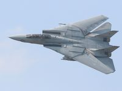

El Grumman F-14 Tomcat es un caza supersónico biplaza con alas de geometría variable pesado, de largo alcance y doble motor, diseñado por Grumman para la Armada de los Estados Unidos. El objetivo primario del Tomcat era la defensa de la flota naval y, entre sus objetivos secundarios, podían contarse la escolta de bombarderos y, más tarde, el ataque contra objetivos en tierra. El Tomcat fue desarrollado especialmente para equipar a la Armada de los Estados Unidos dentro del programa Naval Fighter Experimental (VFX), tras la retirada del proyecto del F-111B. El F-14 fue el primero de una serie de aviones de combate que fueron diseñados incorporando la experiencia del combate aéreo contra los MiG durante la guerra de Vietnam.
